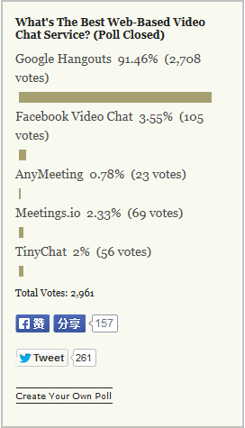
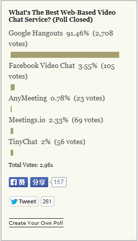

navigator.getUserMedia({video:true}, gotStream, noStream);
var video = document.querySelector('video');
function gotStream(stream) {
video.src = URL.createObjectURL(stream);
}
function noStream() {
document.getElementById('errorMessage').textContent = 'No camera available.';
}
Media Capture and Streams
 


 ShareDrop
ShareDrop

 Photo by Jing
Photo by Jing